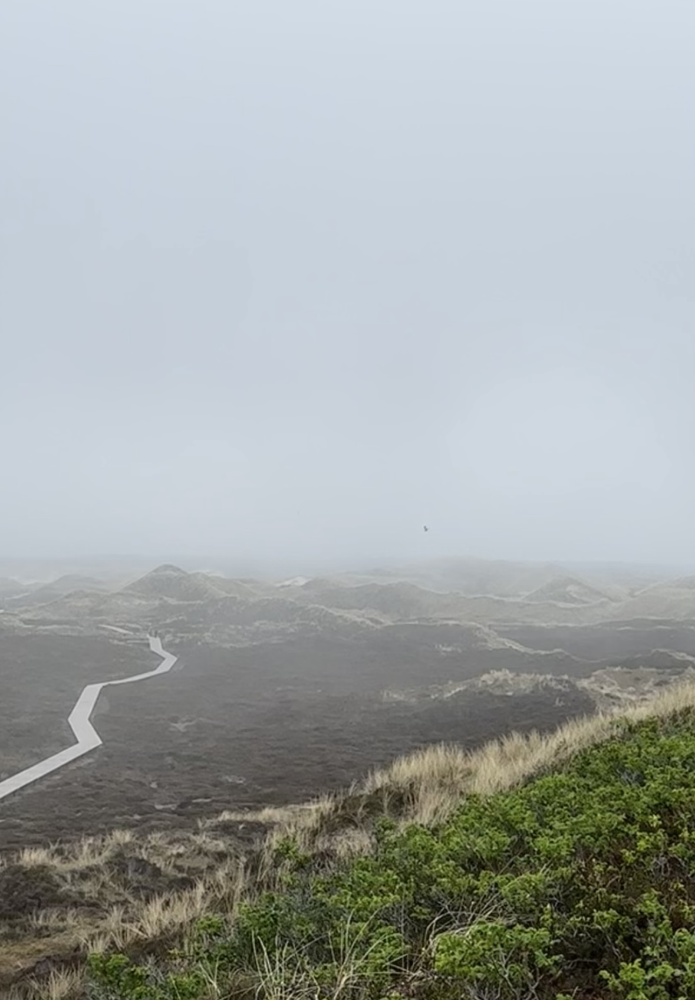
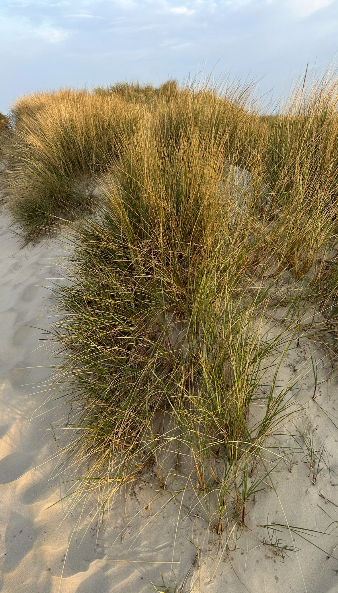
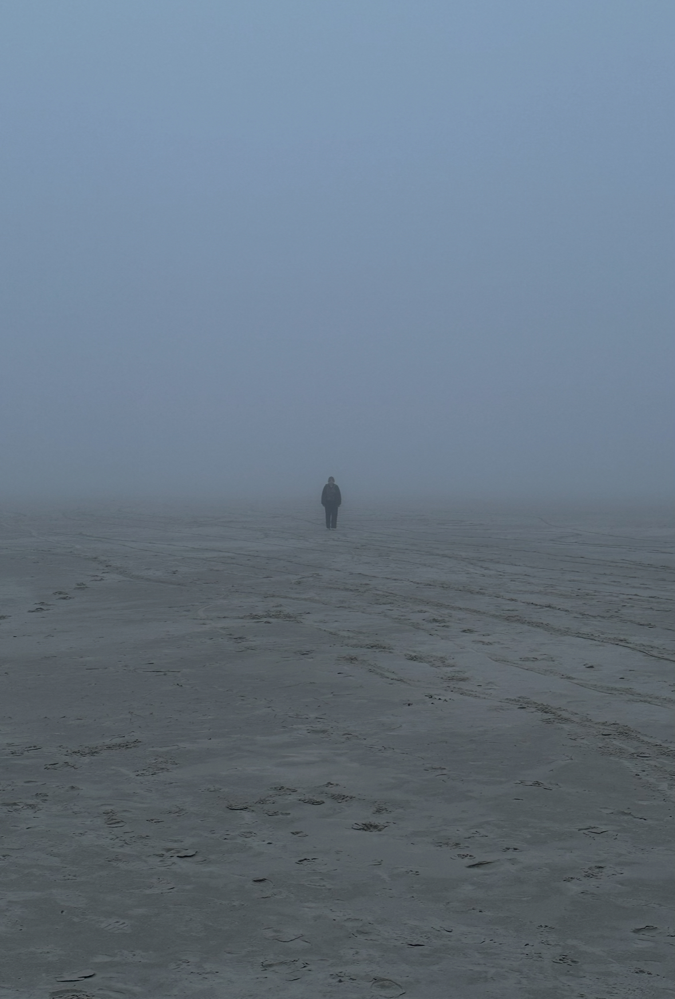

Auf der Exkursion nach Amrum haben wir uns mit der Natürlichkeit von Code befasst und waren auf der Suche nach natürlichen Phänomenen, die in p5js übersetzt werden können. Aus den gesammelten Beobachtungen und Inspirationen sollten dann kleine Projekte entstehen. Um unsere Ideen in Code umzusetzen, arbeiteten wir mit der KI Gemini 2.0.
Ideenfindung
Während der Exkursion habe ich viel fotografiert und gefilmt und hatte gleich mehrere Ideen für das Projekt. Zum Einen haben mich die vielen Dünen fasziniert, die sich im Wind bewegen. Zum Anderen haben wir mystischen Seenebel gesehen, der den ganzen Strand verschluckt hat. Da die Idee mit den Dünen und dem Wind schon andere aufgreifen wollten, widmete ich mich dem Seenebel.



Der Code
Um die Idee mit dem Seenebel umzusetzen, habe ich mich in erster Linie um die Hauptmerkmale von Nebel gekümmert: Er ist transparent, er hat eine gewisse Dichte, er bewegt sich und hat verschiedene Ebenen. Ich suchte im Internet nach verschiedenen Darstellungsweisen und fand das Dither- Prinzip, welches Bilder in Punkte übersetzt. Das gleiche versuchte ich mit meinem Code: Ich teilte die Canvas zuerst in drei horzontale Schichten und sorgte dann dafür, dass die Dichte der Punkte mit jeder höheren Schicht zunahm. Dies verband ich mit der Geschwindigkeit der Partikel. Die Partikel aus der unteren Schicht bewegen sich langsamer, die Partikel aus der oberen schneller. Dadurch entstand der Eindruck von Tiefe und Bewegung im Nebel. Ich überarbeitete den Code immer wieder und veränderte die Variablen der Geschwindigkeit, Farbe, Transparent und Größe der Punkte. Das führte mich weg von dem Dither-Prinzip und sorgte für eine realistischere Darstellung. Ich fügte zum Schluss noch einen schwarzen Kreis hinzu, der bei der Kollision mit den Nebel- Partikeln einen Farbverlauf durchläuft und dann verschwimmt, so als wenn der Nebel ihn verschluckt. Über diese Ergänzung lässt sich streiten, da es von der natürlichen Darstellung von Nebel vielleicht ablenkt, jedoch werden dadurch die Eigenschaften nochmal deutlicher.